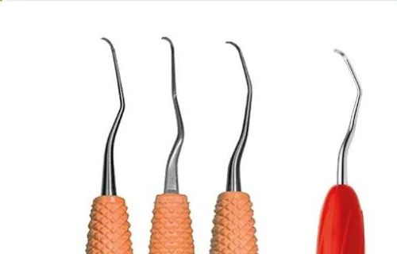

نسخه استخراجشده؛ ترجمه یا تأیید علمی انجام نشده است. وضعیت: captured
یک واقعیت که اغلب دستکم گرفته میشود: بیمار ایمپلنتی که وارد برنامه پایش منظم نشود، خطر پریایمپلنتیتاش چند برابر میشود. ایمپلنت «کاشته و تمام» نیست.
| ویژگی | دندان | ایمپلنت |
|---|---|---|
| آرایش الیاف | عمود بر سطح، از سمان به استخوان | 🔴 موازی سطح؛ بدون اتصال واقعی |
| خونرسانی | سه منبع، شامل PDL | 🔴 کمتر؛ PDL وجود ندارد |
| سد در برابر گسترش عفونت | قویتر | 🔴 ضعیفتر؛ ضایعه سریعتر پیش میرود |
| سطح در معرض | صاف | 🔴 زبر و رزوهدار؛ پناهگاه بیوفیلم |
🔑 نتیجه مستقیم این تفاوتها: ضایعه اطراف ایمپلنت سریعتر پیش میرود و دیرتر علامت میدهد. پس تشخیص زودهنگام تنها راه است — و تشخیص زودهنگام یعنی پایش منظم.
در جلسه تحویل پروتز، این دو را ثبت کن:
⚠️ بدون خط پایه، تشخیص پریایمپلنتیت به آستانههای مطلق و کمدقتتری وابسته میشود: عمق ۶ میلیمتر یا بیشتر بهعلاوه سطح استخوان ۳ میلیمتر یا بیشتر آپیکالیتر.
| ابزار | وضعیت |
|---|---|
| کورت تیتانیومی یا پلاستیکی | 🟢 مناسب |
| ایرپالیشر با پودر گلایسین | 🟢 مؤثر و کمخراش |
| نوک اولتراسونیک با روکش پلاستیکی | 🟢 قابل قبول |
| کورت فولادی معمولی | 🔴 سطح تیتانیوم را خراش میدهد |
| پودر بیکربنات با فشار بالا روی سطح در معرض | 🔴 خراشنده |
🔑 قاعده: هر ابزاری که از تیتانیوم سختتر باشد، سطح را خراش میدهد و همان خراش، پناهگاه تازهای برای بیوفیلم میسازد.

برس بیندندانی با روکش پلاستیکی، نخهای ویژه ایمپلنت و در پروتزهای پیچیده، واترجت. کنترل پلاک بیمار همچنان تعیینکنندهترین عامل است.
| پروفایل بیمار | فاصله پیشنهادی |
|---|---|
| بدون سابقه پریودنتیت، بهداشت خوب، غیرسیگاری | هر ۶ ماه |
| سابقه پریودنتیت درمانشده و پایدار | هر ۳ تا ۴ ماه |
| سیگاری، دیابت کنترلنشده، یا بهداشت ضعیف | هر ۳ ماه یا کوتاهتر |
| سابقه پریایمپلنتیت درمانشده | هر ۳ ماه، بدون استثنا |
📌 همان اصل فاز نگهدارنده: فاصله را ریسک تعیین میکند، نه یک قاعده ثابت.
⚠️ اشتباه رایج ۱: پروبینگ اطراف ایمپلنت ممنوع نیست؛ با نیروی ملایم بیخطر است و کنار گذاشتن آن یعنی از دست دادن حساسترین ابزار تشخیص زودرس.
⚠️ اشتباه رایج ۲: «عمق طبیعی» ثابتی برای ایمپلنت وجود ندارد؛ آنچه اهمیت دارد تغییر نسبت به خط پایه است.
⚠️ اشتباه رایج ۳: بیمار با سابقه پریودنتیت، حتی اگر امروز پایدار باشد، همچنان پرخطر محسوب میشود.
🔑 پیام این درس: موفقیت بلندمدت ایمپلنت در روز جراحی تعیین نمیشود؛ در جلسات پایش سالهای بعد تعیین میشود.